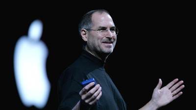
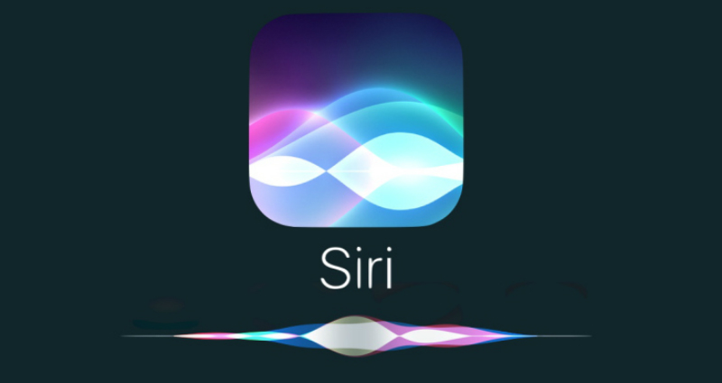

Pengertian Dan Sejarah Safari
Safari adalah nama dari sebuah peramban web (web browser) yang dikembangkan oleh Apple Inc. Safari pertama kali diperkenalkan pada tahun 2003 untuk sistem operasi Macintosh. Kemudian, versi Safari untuk sistem operasi Windows juga dirilis.Selain digunakan pada komputer Macintosh dan Windows, Safari juga menjadi peramban web bawaan pada perangkat iOS (iPhone, iPad, dan iPod Touch) serta perangkat macOS (MacBook, iMac, dan lainnya) yang diproduksi oleh Apple. Safari memiliki beberapa fitur keamanan yang dirancang untuk melindungi pengguna dari situs web berbahaya dan praktik phishing.
Safari, peramban web yang dikembangkan oleh Apple Inc., pertama kali diperkenalkan Pada 7 Januari 2003 oleh Steve Jobs , tidak disebutkan jelas mengenai pencipta safari tetapi salah satu pengembangnya adalah Dave Hyatt .
1. Steve Jobs
Steve Jobs 24 Februari 1955 - 5 Oktober 2011 adalah salah satu tokoh terkemuka dalam industri teknologi. Ia adalah salah satu pendiri Apple Inc. dan memainkan peran penting dalam pengembangan produk-produk ikonik seperti Macintosh, iPod, iPhone, dan iPad. Jobs juga terkenal sebagai penggagas dan pemimpin proyek-proyek inovatif di Apple seperti proyek safari , Jobs membawa perusahaan ini menjadi salah satu perusahaan teknologi terbesar dan paling sukses di dunia.
2. Dave Hyatt
Dave Hyatt pertama kali dikenal secara luas ketika dia bergabung dengan Apple Inc. pada awal tahun 2000-an. Dia adalah salah satu pengembang utama di balik proyek pengembangan Apple Safari, peramban web bawaan untuk sistem operasi macOS dan iOS. Safari pertama kali diperkenalkan pada tahun 2003 dan sejak saat itu telah menjadi salah satu peramban web paling populer di dunia.
Fitur - Fitur Safari
- Antiracun Phishing
- Integrasi iCloud
- Pengelolaan Tab
- Siri Suggestions
- Pemutaran Video AirPlay
- Penghematan Baterai
- Ekstensi Safari
Kelebihan Safari ------------------------------ Kekurangan Mozilla Firefox
- Keamanan dan privasi yang baik
- Kecepatan yang baik
- Integrasi dengan ekosistem Apple
- Fitur pemblokiran iklan
----------------------
- Keterbatasan fitur
- Tidak tersedia di semua platform
- Tidak mendukung banyak ekstensi
- Sinkronisasi yang kurang baik
